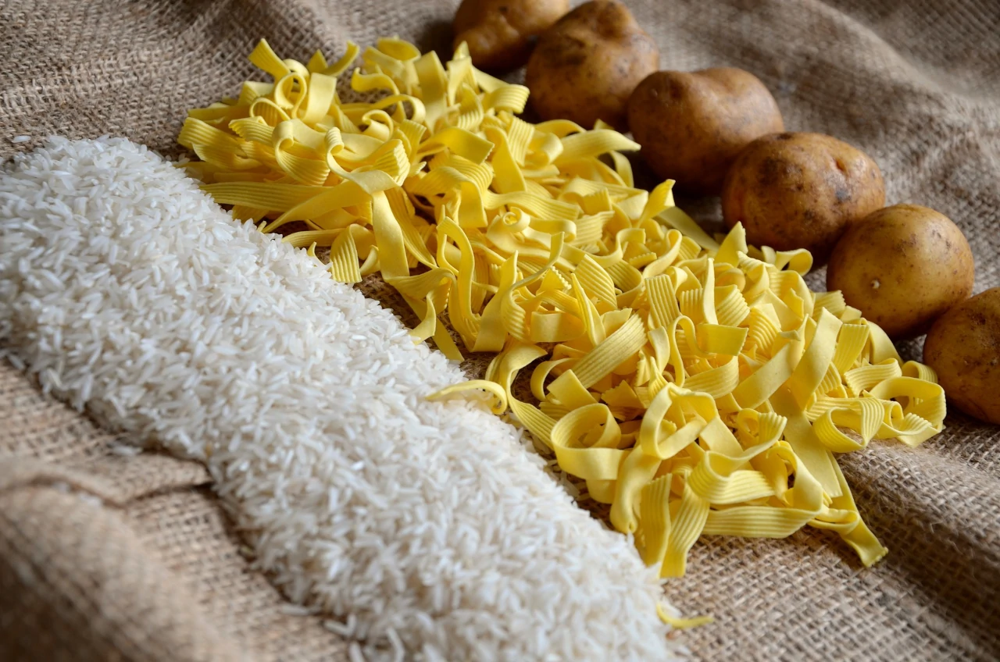

Wat moet je weten over koolhydraten en vetopslag?
Ben jij ook benieuwd of alle koolhydraten hetzelfde zijn? Wist je dat hoewel ze allemaal eindigen als glucose in het bloed, ze verschillende verteringskenmerken hebben? Lees verder om meer te weten te komen over hoe het eten van suiker kan leiden tot een hogere energie-inname en waarom koolhydraatintolerantie een rol kan spelen bij het verliezen van vet.

Maken koolhydraten je dik? Maken koolhydraten uit suiker je dikker dan koolhydraten uit rijst? Zijn volkoren producten beter? Moet je fruitinname beperken?
Niet alle koolhydraten zijn hetzelfde. Toch eindigen alle koolhydraten als glucose in het bloed. Het kan verteringsverschillen hebben maar voor je fysiek maakt het niets uit. Het maakt niet uit of je witte rijst, bruine rijst, suiker, aardappelen, … eet. Eiwitten, vezels en micronutriënten doen er wel toe maar puur kijkende naar koolhydraten blijft het allemaal om de energiebalans draaien.
Het is waar dat mensen die meer koolhydraten eten doorgaans meer lichaamsvet hebben. Mensen die op gevoel eten, gaan simpelweg een hogere energie-inname hebben wanneer ze meer koolhydraten eten. Dat komt doordat koolhydraten over het algemeen voor een erg lage verzadiging zorgt. Pure suiker heeft bijna nul verzadiging. Het vult heel slecht in vergelijking met de hoeveelheid energie die je binnenkrijgt.
Wanneer je suiker toevoegt aan een maaltijd ga je er niet minder van eten. Wellicht ga je er meer van eten doordat het de maaltijd lekkerder maakt. Dit kan er dan ook weer voor zorgen dat je energie-inname stijgt.
Koolhydraten vs. vetten
Het lichaam gebruikt koolhydraten liever niet om op te slaan als vet. Het gebruikt het liever voor energie en een teveel aan koolhydraten zal in eerste instantie nog worden opgeslagen als glycogeen. Het lichaam gebruik vervolgens o.a. glycogeen om een inspanning te leveren.
Toch, wanneer er een energieoverschot is op lange termijn, zal het lichaam eventueel ook koolhydraten omzetten naar vet waardoor vetopslag plaatsvindt en dus vetmassa toeneemt.
Uit bovenstaande kunnen we ook afleiden dat de ratio tussen koolhydraten en vetten binnen een dieet geen direct effect heeft op lange termijn voor vetverlies of vettoename (alleen de totale energie-inname heeft hier effect op). Er is echter één uitzondering: koolhydraatintolerantie.
Koolhydraatintolerantie
Mensen met een koolhydraatintolerantie kunnen meer vet verliezen op een koolhydraatarm dieet. Het zijn doorgaans mensen met overgewicht en vrouwen met PCOS. De mogelijke effecten van koolhydraatintolerantie op de energiebalans zijn een lager energieverbruik door een afname van NEAT, verhoogde eetlust, chronische ontstekingen en daarmee een slechte naleving van het dieet.
Hoe weet je nu of je koolhydraatintolerant bent of niet? Idealiter laat je daarvoor een bloedonderzoek doen maar je zou het ook kunnen schatten op basis van:
- Lichaamsvetpercentage: hoe hoger, hoe slechter je koolhydraattolerantie
- Vetvrije massa: hoe meer spiermassa, hoe minder aannemelijk het is dat je koolhydraatintolerantie zal hebben
- Genetische afkomst: hoe dichter je genen bij Afrikaanse afkomst, hoe waarschijnlijker het is dat je koolhydraatintolerant bent
- Leeftijd: oudere mensen (65+) zullen sneller koolhydraatintolerantie hebben
- Trainingsfrequentie: wanneer je bijna elke dag traint, is de kans op koolhydraatintolerantie zeer klein
Koolhydraten en prestatie
Koolhydraatinname op zichzelf heeft geen acuut effect op krachtprestatie. Onze spieren zijn voornamelijk afhankelijk van eerder opgeslagen glycogeen. De glycogeenvoorraad kan over het algemeen niet worden uitgeput tot het niveau dat het negatieve effecten heeft tijdens een krachttraining.
Trainingen met meer dan tien sets per spiergroep of twee trainingen per dag kunnen je glycogeenvoorraad in de spiervezels wel uitputten tot prestatie beperkende niveaus. In die twee uitzonderingen wil je mogelijk wel van voor en/of na de training meer koolhydraten eten. Voordat je in die gevallen meer koolhydraten gaat eten, moet je jezelf echter wel eerst de vraag stellen waarom je trainingen met meer dan tien sets per spiergroep of twee trainingen per dag doet. Doorgaans is dit niet aan te raden om te doen.
Mensen die duurtrainingen of hoge intensiteit trainingen met korte rustperiodes (teamsporten) doen, of crossfitters, hebben wel baat bij een hogere koolhydraatinname omdat zij sneller die glycogeenvoorraad uitputten.
Voor krachtprestaties zijn koolhydraten dus niet noodzakelijk. Het put je glycogeenvoorraad niet aanzienlijk uit. Je lichaam kan door middel van verschillende systemen die glycogeenvoorraad binnen 24u weer volledig aanvullen zonder dat je daarvoor koolhydraten hoeft te eten.
Vezels
Uiteraard zijn voedingsvezels wel een goede reden om koolhydraten te consumeren. Vezelrijke diëten zijn goed voor je gezondheid. Een hogere vezelinname blijft sterfte door alle oorzaken met 30% te verminderen.
Vezels hebben diverse voordelen:
- Het verhoogt het energieverbruik
- Het verbetert de insulinegevoeligheid
- Het verlaagt inflammatie
- Het helpt om vet te verliezen door verhoogde verzadiging, wat diëten makkelijker maakt
- Het verlaagt het risico op hart- en vaatziekten door bloeddruk en cholesterolgehalte te verlagen
De aanbeveling is 25g vezels voor vrouwen en 38g voor mannen. Voor krachtsporters is dit het absolute minimum. Daarom raden wij voor krachtsporters aan: 30g voor vrouwen en 40g voor mannen.
Wanneer je je hieraan houdt, wordt je eigenlijk al gedwongen om een volwaardig voedingspatroon te hanteren met veel groenten en fruit. Als je gaat kijken naar hoeveel gram vezels per 100 kcal een product heeft, zie je al snel dat groenten opvallen met, bijvoorbeeld, groene groenten die 2 tot 3 gram vezels hebben per 20 kcals.
Eat your veggies!
Wil je dit toepassen op jouw situatie?
In een kennismaking bekijken we je doel en wat daar voor jou voor nodig is.